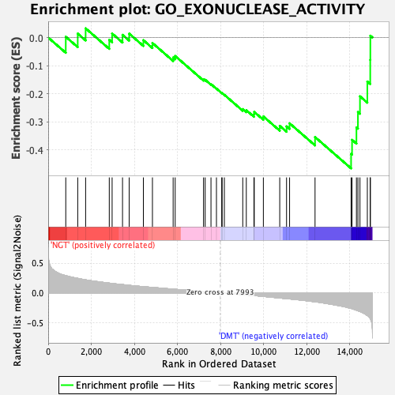

| | | Dataset | Diabetes_collapsed_symbols.Diabetes.cls#NGT_versus_DMT |
| Phenotype | Diabetes.cls#NGT_versus_DMT |
| Upregulated in class | DMT |
| GeneSet | GO_EXONUCLEASE_ACTIVITY |
| Enrichment Score (ES) | -0.4651939 |
| Normalized Enrichment Score (NES) | -1.6843368 |
| Nominal p-value | 0.008264462 |
| FDR q-value | 1.0 |
| FWER p-Value | 0.988 |
Table: GSEA Results Summary

Fig 1: Enrichment plot: GO_EXONUCLEASE_ACTIVITY
Profile of the Running ES Score & Positions of GeneSet Members on the Rank Ordered List
| PROBE | DESCRIPTION
(from dataset) | GENE SYMBOL | GENE_TITLE | RANK IN GENE LIST | RANK METRIC SCORE | RUNNING ES | CORE ENRICHMENT | | 1 | APTX | na | | | 816 | 0.289 | 0.0027 | No |
| 2 | RAD1 | na | | | 1371 | 0.244 | 0.0140 | No |
| 3 | WRN | na | | | 1738 | 0.218 | 0.0327 | No |
| 4 | CNOT2 | na | | | 2836 | 0.163 | -0.0082 | No |
| 5 | DCP2 | na | | | 2968 | 0.158 | 0.0142 | No |
| 6 | PARN | na | | | 3451 | 0.139 | 0.0096 | No |
| 7 | ISG20 | na | | | 3761 | 0.126 | 0.0138 | No |
| 8 | RAD9A | na | | | 4419 | 0.104 | -0.0094 | No |
| 9 | APEX2 | na | | | 4840 | 0.091 | -0.0195 | No |
| 10 | TREX1 | na | | | 5801 | 0.062 | -0.0711 | No |
| 11 | CNOT7 | na | | | 5896 | 0.059 | -0.0657 | No |
| 12 | EXOSC10 | na | | | 7212 | 0.022 | -0.1490 | No |
| 13 | ENPP2 | na | | | 7289 | 0.020 | -0.1502 | No |
| 14 | POLG | na | | | 7558 | 0.012 | -0.1656 | No |
| 15 | DCLRE1C | na | | | 7812 | 0.005 | -0.1815 | No |
| 16 | DCLRE1A | na | | | 8057 | -0.002 | -0.1974 | No |
| 17 | DCLRE1B | na | | | 8075 | -0.002 | -0.1980 | No |
| 18 | POLD1 | na | | | 8179 | -0.006 | -0.2037 | No |
| 19 | CNOT8 | na | | | 9033 | -0.030 | -0.2545 | No |
| 20 | APEX1 | na | | | 9198 | -0.036 | -0.2583 | No |
| 21 | DCPS | na | | | 9552 | -0.046 | -0.2727 | No |
| 22 | EXOSC7 | na | | | 9567 | -0.047 | -0.2645 | No |
| 23 | DDX1 | na | | | 9990 | -0.060 | -0.2806 | No |
| 24 | TDP1 | na | | | 10750 | -0.087 | -0.3141 | No |
| 25 | EXOSC5 | na | | | 11066 | -0.098 | -0.3158 | No |
| 26 | EXOSC4 | na | | | 11207 | -0.102 | -0.3049 | No |
| 27 | RAD50 | na | | | 12389 | -0.151 | -0.3538 | No |
| 28 | TOE1 | na | | | 14063 | -0.262 | -0.4135 | Yes |
| 29 | TREX2 | na | | | 14107 | -0.267 | -0.3637 | Yes |
| 30 | EXO1 | na | | | 14311 | -0.292 | -0.3197 | Yes |
| 31 | POLE | na | | | 14380 | -0.301 | -0.2648 | Yes |
| 32 | FEN1 | na | | | 14475 | -0.315 | -0.2090 | Yes |
| 33 | ENPP1 | na | | | 14817 | -0.382 | -0.1564 | Yes |
| 34 | EXOSC9 | na | | | 14952 | -0.435 | -0.0795 | Yes |
| 35 | EXOSC2 | na | | | 14957 | -0.438 | 0.0065 | Yes |
Table: GSEA details [plain text format]
Fig 2: GO_EXONUCLEASE_ACTIVITY
Blue-Pink O' Gram in the Space of the Analyzed GeneSet
Fig 3: GO_EXONUCLEASE_ACTIVITY: Random ES distribution
Gene set null distribution of ES for GO_EXONUCLEASE_ACTIVITY